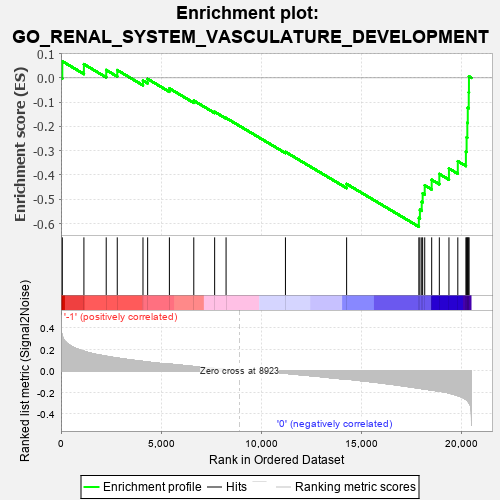
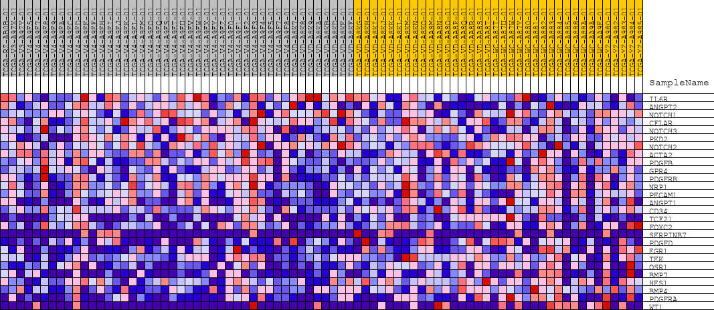
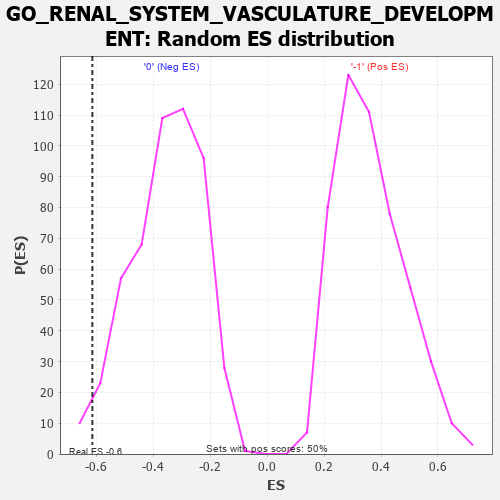

| | | Dataset | GSEAExpression.phenotype_uvm.cls#-1_versus_0 |
| Phenotype | phenotype_uvm.cls#-1_versus_0 |
| Upregulated in class | 0 |
| GeneSet | GO_RENAL_SYSTEM_VASCULATURE_DEVELOPMENT |
| Enrichment Score (ES) | -0.6133031 |
| Normalized Enrichment Score (NES) | -1.7315657 |
| Nominal p-value | 0.025793651 |
| FDR q-value | 1.0 |
| FWER p-Value | 0.95 |
Table: GSEA Results Summary

Fig 1: Enrichment plot: GO_RENAL_SYSTEM_VASCULATURE_DEVELOPMENT
Profile of the Running ES Score & Positions of GeneSet Members on the Rank Ordered List
| PROBE | DESCRIPTION
(from dataset) | GENE SYMBOL | GENE_TITLE | RANK IN GENE LIST | RANK METRIC SCORE | RUNNING ES | CORE ENRICHMENT | | 1 | IL6R | na | | | 66 | 0.320 | 0.0683 | No |
| 2 | ANGPT2 | na | | | 1145 | 0.182 | 0.0564 | No |
| 3 | NOTCH1 | na | | | 2260 | 0.135 | 0.0323 | No |
| 4 | CFLAR | na | | | 2812 | 0.118 | 0.0319 | No |
| 5 | NOTCH3 | na | | | 4098 | 0.087 | -0.0113 | No |
| 6 | PKD2 | na | | | 4331 | 0.082 | -0.0044 | No |
| 7 | NOTCH2 | na | | | 5418 | 0.062 | -0.0434 | No |
| 8 | ACTA2 | na | | | 6637 | 0.040 | -0.0939 | No |
| 9 | PDGFB | na | | | 7680 | 0.022 | -0.1399 | No |
| 10 | GPR4 | na | | | 8251 | 0.011 | -0.1652 | No |
| 11 | PDGFRB | na | | | 11219 | -0.022 | -0.3050 | No |
| 12 | NRP1 | na | | | 14277 | -0.076 | -0.4371 | No |
| 13 | PECAM1 | na | | | 17888 | -0.161 | -0.5773 | Yes |
| 14 | ANGPT1 | na | | | 17941 | -0.163 | -0.5434 | Yes |
| 15 | CD34 | na | | | 18032 | -0.165 | -0.5108 | Yes |
| 16 | TCF21 | na | | | 18078 | -0.167 | -0.4757 | Yes |
| 17 | FOXC2 | na | | | 18181 | -0.169 | -0.4427 | Yes |
| 18 | SERPINB7 | na | | | 18529 | -0.178 | -0.4198 | Yes |
| 19 | PDGFD | na | | | 18911 | -0.190 | -0.3960 | Yes |
| 20 | EGR1 | na | | | 19392 | -0.206 | -0.3734 | Yes |
| 21 | TEK | na | | | 19835 | -0.230 | -0.3435 | Yes |
| 22 | OSR1 | na | | | 20240 | -0.265 | -0.3038 | Yes |
| 23 | BMP7 | na | | | 20275 | -0.270 | -0.2450 | Yes |
| 24 | HES1 | na | | | 20311 | -0.276 | -0.1849 | Yes |
| 25 | BMP4 | na | | | 20333 | -0.282 | -0.1229 | Yes |
| 26 | PDGFRA | na | | | 20382 | -0.294 | -0.0595 | Yes |
| 27 | WT1 | na | | | 20392 | -0.296 | 0.0061 | Yes |
Table: GSEA details [plain text format]

Fig 2: GO_RENAL_SYSTEM_VASCULATURE_DEVELOPMENT
Blue-Pink O' Gram in the Space of the Analyzed GeneSet

Fig 3: GO_RENAL_SYSTEM_VASCULATURE_DEVELOPMENT: Random ES distribution
Gene set null distribution of ES for GO_RENAL_SYSTEM_VASCULATURE_DEVELOPMENT